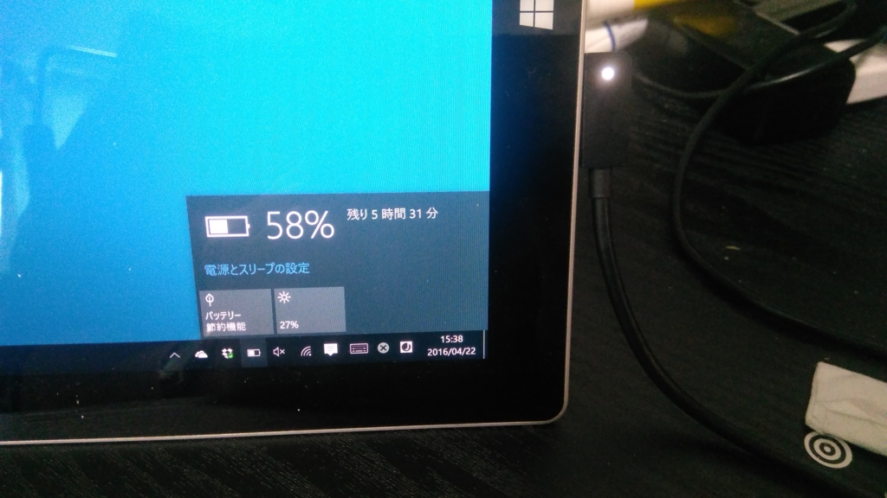
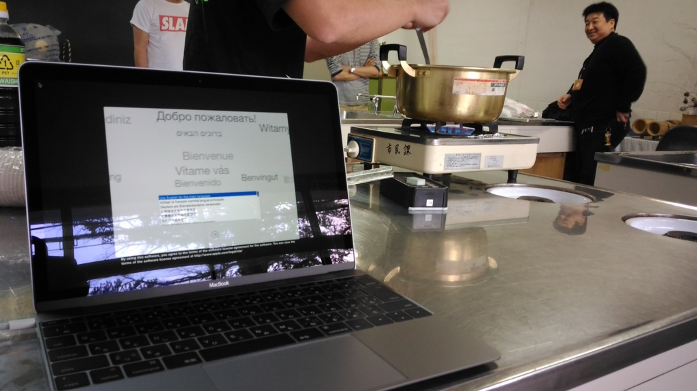
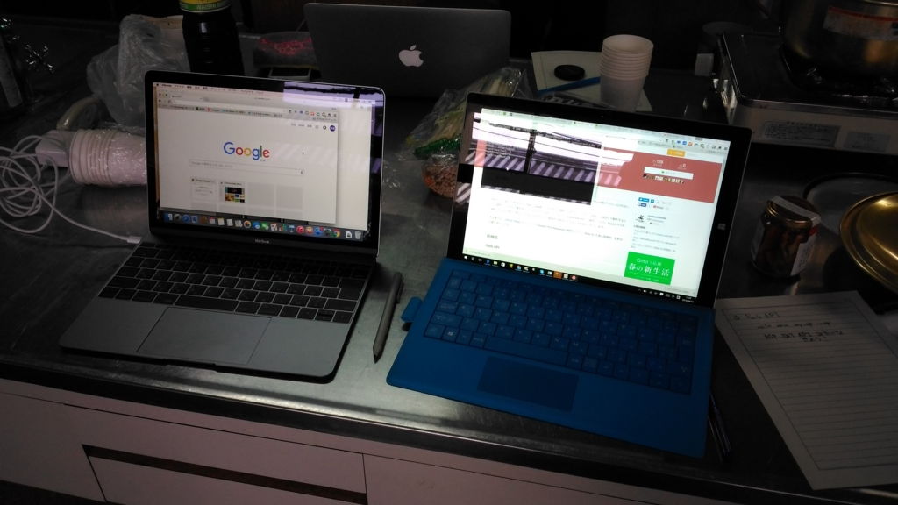
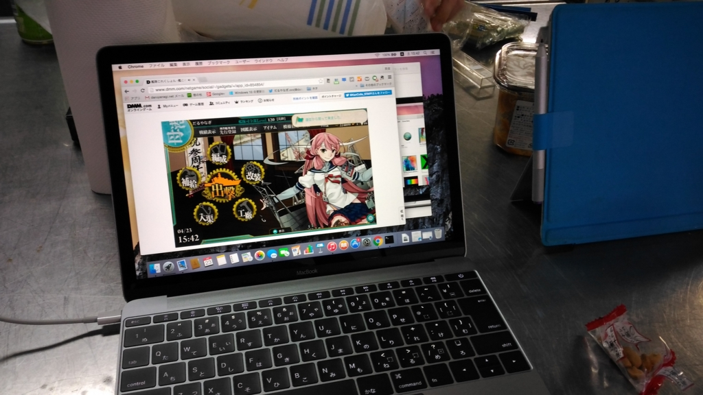

Surface 3 が充電できなくなったので、急遽古い“新しい Macbook”を買った
公開日：

ゴールデンウイークまであと一週間。あと何日か乗り切れば、お休みだ！ そんななか、うちの Surface 3 が静かに息を引き取った。死因はバッテリーの充電不能。最後の最後まで Microsoft のサポートページをみながら蘇生を試みたものの、ついぞバッテリー残量が回復することはなかった。
というわけで、急遽新しいモバイル PC が必要になった。Surface Pro 3 はまだ健在なんだけど、Windows 10 Insider Preview（Fast リング）のマシンにしているから、日常利用にするには少し厳しい。
ちょうどそのとき、2代目の“新しい Macbook”が突如 Apple Store で発売された。これもなにかの巡り合わせ。Mac 環境もあった方がいいし、これを買うことにした。
そんなわけで、ゆるふわ.rb に参加するため大洲へ向かうついでに、松山のエディオンに寄ってみた。しかし――在庫がなかった／(^o^)＼もしかしたら海の向こう（つまり、広島とか岡山）にはあるかもしれないけれど、まだ四国には伝来していないらしい（ﾌｧｯｷｭｰ！
けれど、店頭で1つ古い“新しい Macbook”を触ってると、これがなかなかいい感じ。初代と2代目との違いは CPU がアップデートされた程度らしいので、これでもいいかという気がしてくる。というわけで、値切り交渉。最終的には1割ちょっとぐらいマケてもらった。Apple 製品は値引きが難しいだろうに、ちょっと無理を言ってしまって申し訳ないが、こっちも旧モデルを定価で買うにはいかぬ。1割マケてもらって、ようやく価格.com の最安値よりも少し低い程度だしな……ここでは引けないのだよ。
でも、量販店で買うのもたまにはいいものだと思った。「これのソフトカバーがほしい」といったザックリした注文にもこたえてくれるし、「Surface 3 が死んでもうたんやー」という話をしたらサポート窓口の電話番号などを懇切丁寧に教えてくれた。あと、帰りしなになぜかラーメンくれた。なかなか気に入ったので、贔屓にしようと思った。

さて、今回購入した古い“新しい Macbook”。ゆるふわ.rb の会場で、ウェルカムドリンクのあおさ汁を飲みながらさっそく開封してみた。
なんといっても、筐体の質感がいいな。なんというか、大事にしたくなる感じ。Windows マシンってこういうのが欠けてるよな。
キーボードは薄っぺらいが Surface の TypeCover に比べれば格段に打ちやすい。テキストの入力には十分かな。［F12］キーの隣に電源ボタンがあるのは「Apple の設計者ってバカなのかな？」と思ったけど。あと、ファンクションキーの間隔が等幅なのもちょっとイヤ。Windows 機（というか、Mac 以外）だと4つごとにグルーピングされてるから、だいたい感覚で目的のキーをプチれるが、MacBook だといちいち目でキーを探してしまう。まぁ、そのうち慣れるのかもしれないが。あと、Mac ユーザーって［Delete］キー*1要らないのかね？ 割と頻繁に使うキーだと思うのだけど。

（Surface Pro 3 と比べてみたやで）
OS X は久しぶりに使ったけれど*2、Spotlight を呼び出すキーボードショートカットだけ教えてもらったらなんとなく使えた。ファイルのリネームのやり方が Windows と異なるのとかは戸惑うけど、まぁ、大丈夫。あと、スクリーンショットを撮るキーバインド覚えにくいな。そういえば［Print Screen］キーないんだもんな。それにしても「Finder」が超使いにくいのには閉口させられた。使い方がよくわかってないだけかもしれんが、覚えるのもめんどくさいので、目的のフォルダーはターミナルから起動することにした。
Windows の GUI はアプリからもモノからもコマンドが実行できるようになってる。たとえばディスクをフォーマットするときは、フォーマットツールを立ち上げてからディスクを選んでもいいし、ディスクのコンテキストメニューからでもいい。でも、Mac はツール → 処理 というパスしかないことが多いみたい。そのぶんコンテキストメニューがごちゃごちゃすることがなくていいんだけど、慣れないうちは不便に感じる（Windows のコンテキストメニューのカオスっぷりはアジア的だなと思う）。

とりあえず、みんながお刺身を切っている間に艦これを遊ぶ環境を整えたり、Rails をインストールしてみたりして遊んだ。Mac と Ruby って相性いいんだろうな、Rails 5 なんかコマンド一発で入るんだろうな、と思ってたのにそうじゃなかったのが意外だった。最初のハードルは Windows の方が低いんじゃないか？ まぁ、あとでいろいろ困るんだけどさ。
家に帰ってから Bootcamp で Windows 8.1 を入れてみたのだけど、こっちもあっさり動いた。なんかドライバーがイマイチ（とくにタッチパッドが全力出し切ってない感）だけど、まぁまぁ、フツーに使える。軽くて持ち運びしやすいし、クラムシェルは膝の上でテキストを打つのにいい感じなので、Surface 3（この前入院から帰ってきました）と使い分けようかなと思う。